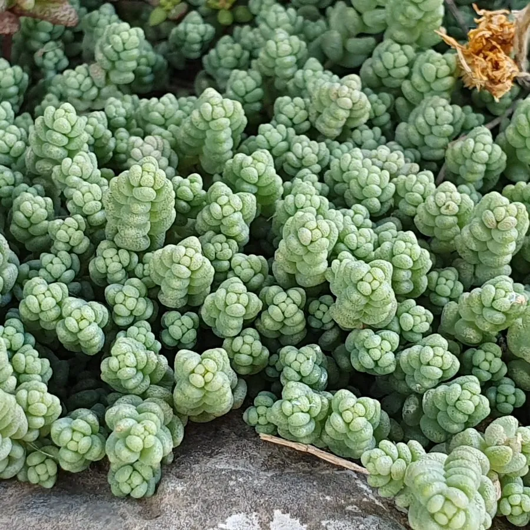

多肉植物 · 植物界
姬星美人 Sedum dasyphyllum

景天科景天属多年生肉质草本，叶片极小、蓝绿色密生如繁星，易群生成垫状，是颇受欢迎的小型多肉植物。
- 分类
- 门被子植物门纲木兰纲目虎耳草目科景天科属景天属
- 栖息环境
- 地中海沿岸的岩石缝隙与干燥坡地，喜光、耐旱、怕湿热
- 地理分布
- 原产地中海沿岸至南欧；中国各地广泛盆栽栽培
- 保护级别
- IUCN 暂无评估；栽培普遍，野生种群稳定
物种志
姬星美人为多年生肉质草本，高 5–10 厘米，茎细弱、匍匐或直立，易分枝群生。叶片极小，长 3–5 毫米，卵圆形，蓝绿色至灰绿色，密生于茎上，表面被细粉，叶尖在强光下泛红。花小，白色至淡粉色，星形，春季开放。
本种原产地中海沿岸至南欧的岩石缝隙，喜阳光充足、通风良好、干燥的环境，耐旱但不耐湿热。它株型小巧、叶片密集，容易长成垫状群生，是微型多肉组合与盆栽铺面的热门材料。姬星美人夏季高温时需遮阴控水，否则容易腐烂；冬季需保持干燥并移入室内。繁殖以扦插为主，剪下一小段茎插入土中即可生根。夏季闷热时最好放在通风的窗台或空调房内。
形态与习性
- 株高5–10 厘米，茎细弱匍匐
- 叶片极小，长 3–5 毫米，蓝绿色
- 花期春季，花白色至淡粉色
- 光照喜光，夏季需遮阴
- 水分耐旱，怕湿热，干透浇透
- 土壤疏松透气的颗粒土
- 主要用途微型盆栽、多肉组合与铺面
趣味知识
- 姬星美人的叶片只有米粒大小，密密麻麻长在茎上，像撒了一地小星星。
- 它原产地中海沿岸的岩石缝里，耐旱能力极强，却最怕夏天闷热潮湿。
- 强光下它的叶尖会泛红，整株呈现蓝绿与粉红交织的色彩。
- 剪一段茎插进土里就能生根，是繁殖最容易的多肉之一。